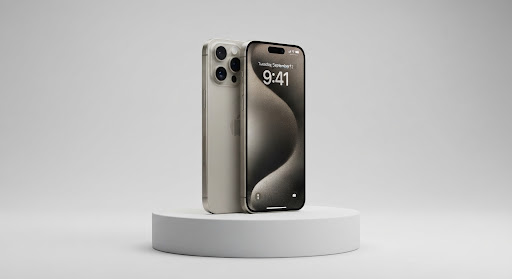
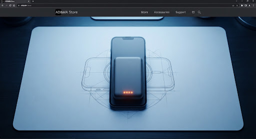
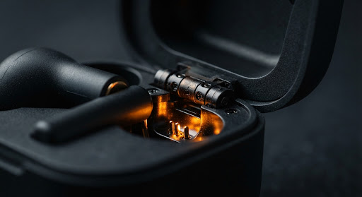
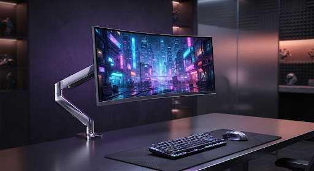
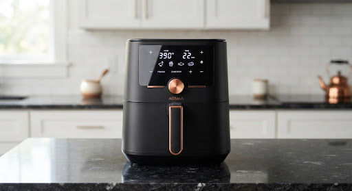

Laptops
How to choose a laptop that fits the way you work
Start with your daily tasks, then compare the processor, memory, screen, and battery without paying for specifications you will not use.
AlMumez technology journal
Practical explanations, buying advice, and simple care tips to help you get more from every device.
Laptops
Start with your daily tasks, then compare the processor, memory, screen, and battery without paying for specifications you will not use.
Helpful insights

Phones
Focus on the display, camera, battery, storage, and update support that match your use.
Decide which features affect your day most. A frequent photographer may value camera processing, while a traveller may benefit more from battery life and durable construction.

Device care
Small changes to heat, charging, and background activity can support dependable battery performance.
Avoid leaving devices in excessive heat, use suitable chargers, and review power-hungry applications. Battery ageing is normal, but thoughtful use can reduce unnecessary strain.

Wearables
Compare compatibility, comfort, battery life, and the notifications or activities that matter to you.
Check that the watch works well with your phone, then consider size and comfort. Fitness features are useful when they suit activities you already enjoy.

Audio
Safe cleaning and careful storage keep personal audio products comfortable and ready to use.
Use a dry, soft cloth, keep moisture away from charging points, and return earbuds to their case. Follow the manufacturer instructions before deeper cleaning.

Gaming
Resolution, refresh rate, panel type, and connectivity each shape the experience in a different way.
Match the monitor resolution and refresh rate to your computer or console. Screen size and viewing distance matter as much as headline specifications.

Home technology
Useful capacity, simple controls, easy cleaning, and available space are a better starting point than features alone.
Measure the available space and think about how many people the appliance will serve. Features are most valuable when they make a regular task genuinely easier.
Try another word or view all categories.